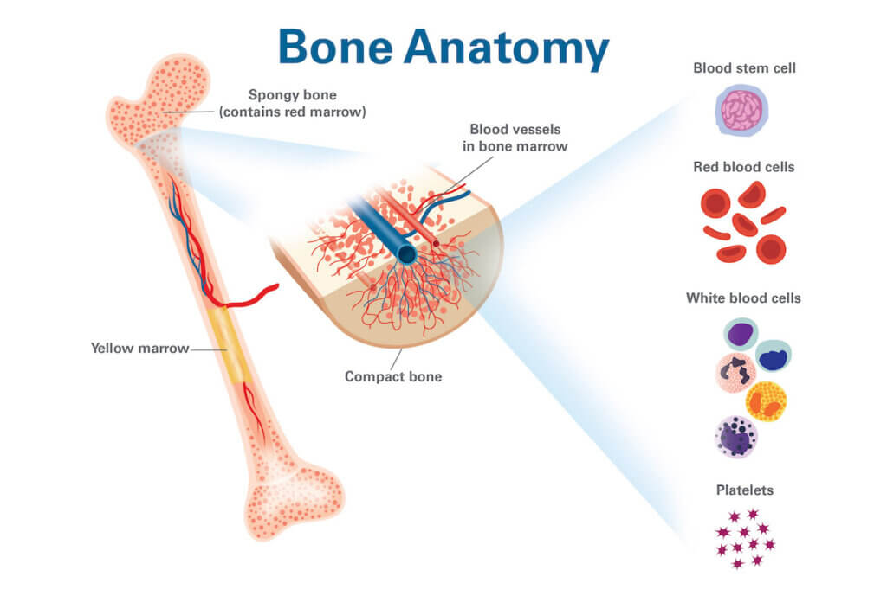

One powerful examples of stem cells in action is stem cells in the bone marrow.
Stem cells exist in the bone marrow (in addition to the skin, heart, teeth, and brain).
When they differentiate, they leave the bone marrow and enter the bloodstream.
Bone marrow stem cells differentiate into 3 key types of cells:
- Red Blood Cells:
- White Blood Cells or Immune Cells
- Platelets: These are fragments of large cells called megakaryocitesm, which are clotting factors in the blood
